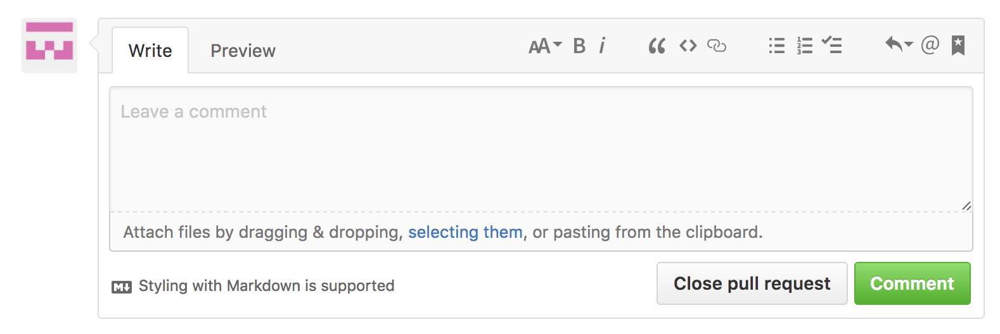
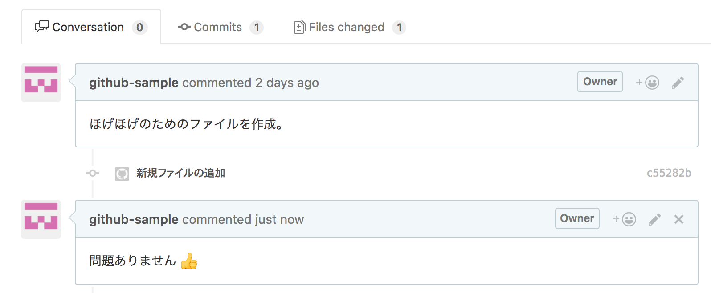

本来であれば、プルリクエストを送る開発者と確認する開発者は別の人ですが、ここでは説明のため、自分自身でプルリクエストを確認することにします。
先ほど作成したプルリクエストのページを開いて「Conversation」「Commits」「Files changed」のタブで、それぞれ次の内容を確認しましょう。
気になる点があれば、コメントで指摘・質問します。気になる点がない場合には「問題ない」旨をコメントします。
問題の有無だけでなく、効率的なソースコードの書き方や、読みやすい書き方の提案、良いところを褒めるなど、開発者とコミュニケーションをとりましょう。コメントを記載して、「Comment」をクリックします。
コメントが記載されたら、プルリクエストを送った開発者がそのコメントを確認し、必要があれば再度修正し、コメントを追記します。そして、再度確認をもらいコメントのやり取りを両者納得できるまで繰り返します。